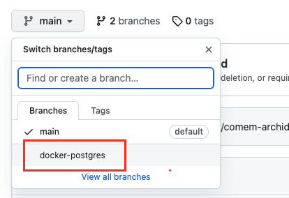
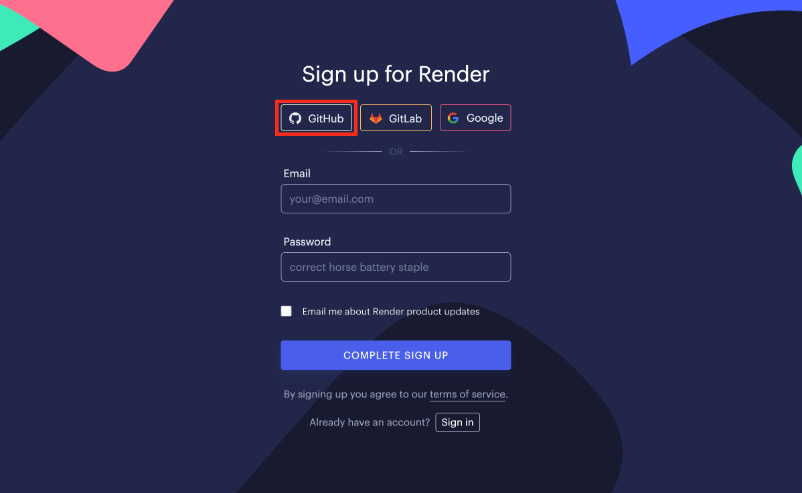
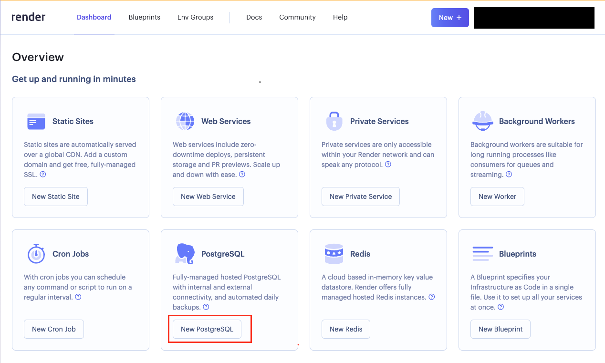
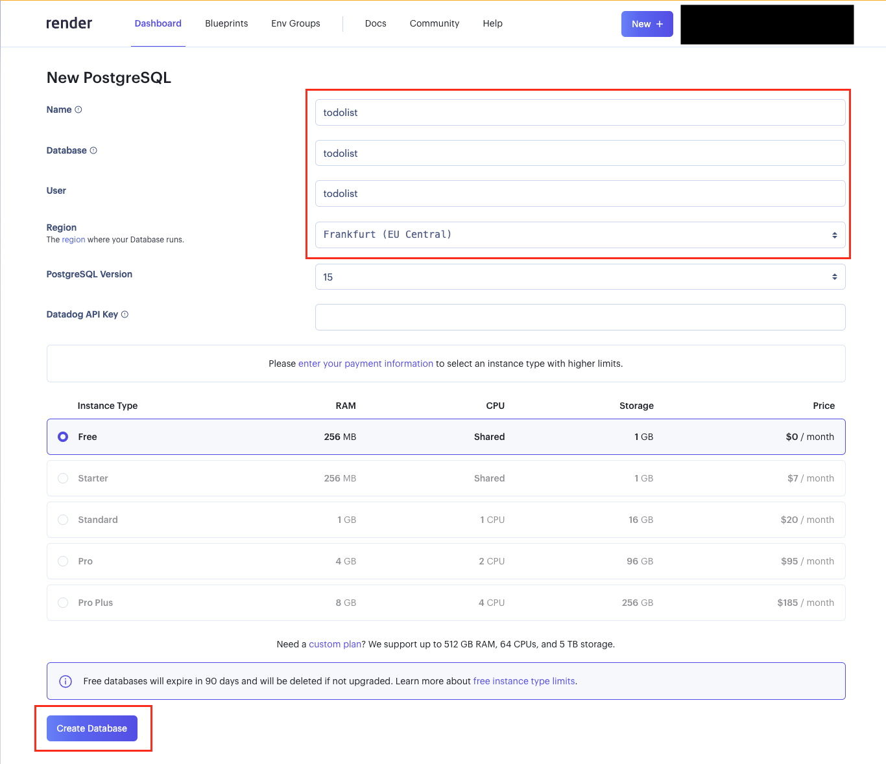
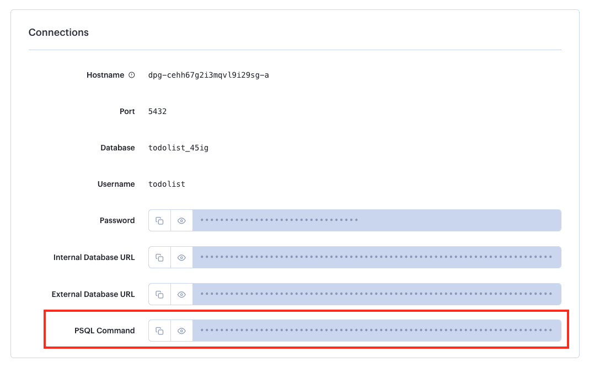
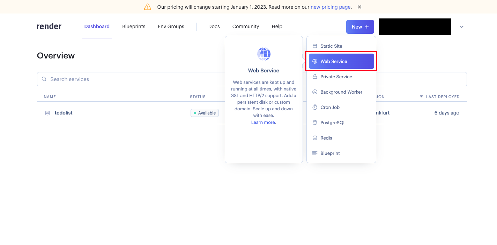
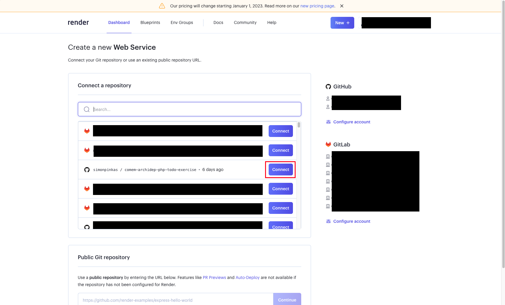
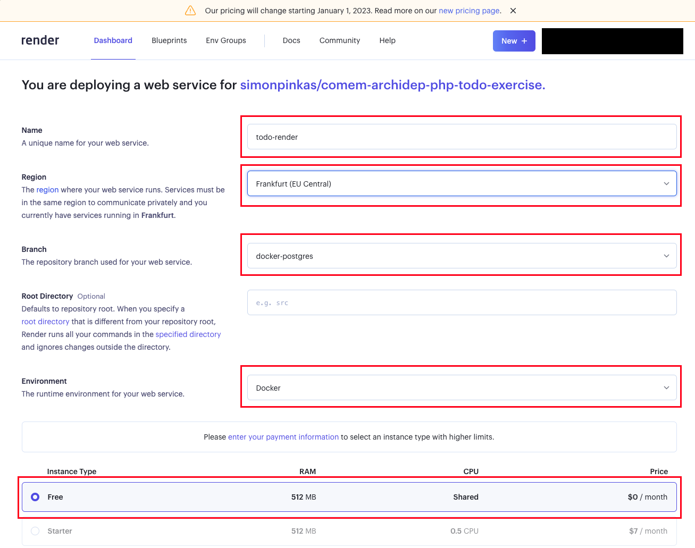
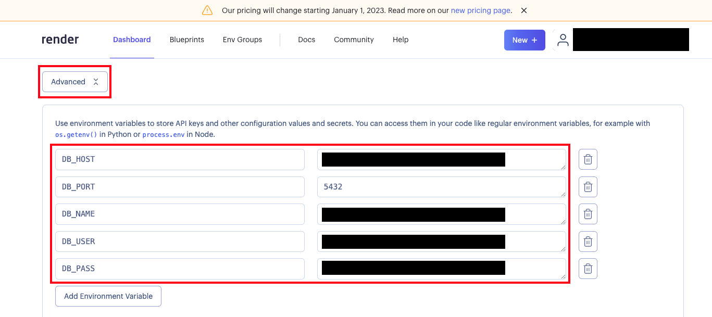
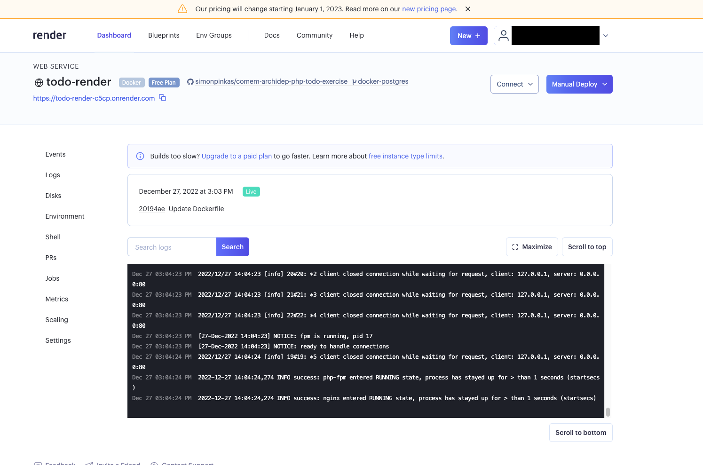

Work on your local machine, NOT your cloud server. The goal of this exercise is to deploy on Render, not your own server, to illustrate the difference between Platform-as-a-Service (PaaS) and Infrastructure-as-a-Service (IaaS).
Deploy web applications with a database to Render
The goal of this exercise is to deploy the same PHP Todolist application as in previous exercises, but this time on the Render Platform-as-a-service (PaaS) cloud instead of your own server in the Infrastructure-as-a-Service (IaaS) Microsoft Azure Web Services cloud. This illustrates the difference between the two cloud service models.
This guide assumes that you are familiar with Git and that you have a basic understanding of what a Platform-as-a-Service is.
On this page
Table of contents
 Legend
Legend
Parts of this exercise are annotated with the following icons:
-
 A task you MUST perform to complete the exercise
A task you MUST perform to complete the exercise
-
 Optional step that you may perform to make sure that
everything is working correctly, or to set up additional tools that are not required but can
help you
Optional step that you may perform to make sure that
everything is working correctly, or to set up additional tools that are not required but can
help you
-
 Advanced tips on how to go further (or
challenges!)
Advanced tips on how to go further (or
challenges!)
 The end of the exercise
The end of the exercise-
 The architecture of the software you ran or
deployed during this exercise
The architecture of the software you ran or
deployed during this exercise
-
 Troubleshooting tips: how to fix common problems you might
encounter
Troubleshooting tips: how to fix common problems you might
encounter
Install PostgreSQL
PostgreSQL is a relational database management system that is very similar to
MySQL. We use it here because we can deploy it with one click on Render. Other
benefits of using PostgreSQL are performance, concurrency and SQL language
support. You will need to install PostgreSQL on your own machine in order to
access the remote instance hosted on Render using the psql command-line
interface. The installation procedure differs on macOS and Windows.
macOS
To install PostgreSQL, you will be using Homebrew, the leading package manager for Mac. You may install it directly from your terminal, by entering:
$> /bin/bash -c "$(curl -fsSL https://raw.githubusercontent.com/Homebrew/install/HEAD/install.sh)"
Once this is done, you can easily install packages by writing brew install
followed by the name of the package:
$> brew install postgresql@18
Check that you have access to the psql command by entering:
$> psql --version
psql (PostgreSQL) 18.x (Homebrew)
Windows
Open your WSL terminal and install PostgreSQL with APT:
$> sudo apt install postgresql-client-16
Check that you have access to the psql command by entering:
$> psql --version
psql (PostgreSQL) 16.x
Getting your Todolist fork up-to-date.
When you started working on the Todolist application, you forked an existing
codebase from a GitHub repository. While you were working on your configuration,
the team with access to the original repository implemented the changes
necessary for a PaaS deployment in a branch called docker-postgres.
By default, your fork does not track changes from the original repo, which is also commonly referred to as the upstream. Let’s reconfigure our repository so that it can fetch data from there.
If you do not remember where the Todolist repository is stored on your local
machine, you can simply clone it again from GitHub by running git clone git@github.com:JohnDoe/php-todo-ex.git. Don’t forget to replace JohnDoe with
your GitHub username.
Add the upstream as a remote
From the terminal, move into your repository and add the upstream repository as
a remote (this time, leave ArchiDep in the URL, you want to use the
original URL and not your own):
$> cd php-todo-ex
$> git remote add upstream https://github.com/ArchiDep/php-todo-ex
Unlike the automated deployment exercise, you will not be pushing to this remote. You couldn’t anyway, as you are not a collaborator on the upstream repository so you do not have the right to push. Instead, you will use it to fetch up-to-date code from a branch.
Fetch data from upstream
Fetch all commits from the upstream repository:
$> git fetch upstream
remote: Enumerating objects: 11, done.
remote: Counting objects: 100% (11/11), done.
remote: Compressing objects: 100% (6/6), done.
remote: Total 11 (delta 4), reused 11 (delta 4), pack-reused 0
Unpacking objects: 100% (11/11), 3.20 KiB | 545.00 KiB/s, done.
From https://github.com/ArchiDep/php-todo-ex
* [new branch] docker-postgres -> upstream/docker-postgres
* [new branch] main -> upstream/main
As you can see, this gives you access to upstream branches, including one called
upstream/docker-postgres. With the next command you will copy the content of
that upstream branch into your own branch.
$> git switch -c docker-postgres upstream/docker-postgres
branch 'docker-postgres' set up to track 'upstream/docker-postgres'.
Switched to a new branch 'docker-postgres'
This command will create a new branch in your local repository, based on the
contents of the upstream branch. This command automatically switches you to the
new branch. If you browse through the project in a code editor or by using
cat, you should now be able to see changes to todolist.sql, as well as a
mysterious new Dockerfile.
Docker is a tool designed to make it easier to create, deploy, and run applications by using containers. Containers allow a developer to package up an application with all of the parts it needs, such as libraries and other dependencies, and ship it all out as one package. A Dockerfile is a text file that contains instructions for how to build a Docker image. We will learn more about Docker later in the course, and you can of course learn more on the Docker website.
Push the new branch to GitHub
$> git push origin
...
* [new branch] docker-postgres -> docker-postgres
You can go check on GitHub whether your new branch has been pushed, by displaying the branch dropdown:

 Let’s note that this whole step has nothing to do with PaaS deployments in
and of themselves. It is just a corollary of some code changes that had to be
made for the Todolist to work with PostgreSQL and Docker.
Let’s note that this whole step has nothing to do with PaaS deployments in
and of themselves. It is just a corollary of some code changes that had to be
made for the Todolist to work with PostgreSQL and Docker.
Create and configure a PostgreSQL Database on Render
Instead of manually configuring a Linux server, you will be provisioning a couple of services on Render. The first is a PostgreSQL Database.
Create a Render account
Start by creating a new Render account. If you choose to register using GitHub, you will be able to skip linking these two accounts together later:

Create a PostgreSQL instance
Sign-in to your Render account and click the new PostgreSQL button:

Warning
You can only have 1 active PostgreSQL deployment in the free Render tier. If you want more, you gotta pay.
This will take you to the following setup page, where you will need to configure:
- A name for your deployment
- A name for the database
- A username
- The region where the database is deployed (pick the one closest to your customers).
A password will be automatically generated for you.

When you are done, click Create Database and your PostgreSQL database will be provisioned automatically. Be patient, this process can take a few minutes. Once it is deployed you will be taken to a page with information pertaining to your new database and you should see the following:
Connect to the database and create tables
At this point, you have a database. Congratulations. But you still need to set
its tables up. As you did in the first Todolist tutorial, you will be running
the todolist.sql script on the database, albeit remotely.
The script is a bit different than the previous one because of two factors. First, we are using PostgreSQL instead of MySQL. Second, we do not need to create a database. As a matter of fact, this script is a bit simpler than the previous one.
Go back to your terminal and make sure you are in your repository and on the
docker-postgres branch:
$> git branch --show-current
docker-postgres
If not, check out the correct branch with the git switch docker-postgres
command.
Next, connect to your PostgreSQL database from the command line. On the Render dashboard, you should be able to see a Connections section. This is where all the connection information to your database lives. You will need this information more than once, so keep this tab open.
The information you need to connect to the database shell is located in the PSQL Command field. You can display or copy the contents of this field by clicking the icons to the left of the hidden characters.

Copy and paste the command in your terminal. This will connect you directly to the remote database deployed by Render.
$> PGPASSWORD=your_password psql -h your_host.frankfurt-postgres.render.com -U your_user your_database
psql (14.6 (Homebrew), server 15.1)
WARNING: psql major version 16, server major version 16.
Some psql features might not work.
SSL connection (protocol: TLSv1.3, cipher: TLS_AES_128_GCM_SHA256, bits: 128, compression: off)
Type "help" for help.
your_database=>
You can now execute the todolist.sql file:
your_database=> \i todolist.sql
CREATE TABLE
You can make sure the script worked by displaying all the todo table’s
columns:
your_database=> \d+ todo
Column | Type | Default | Storage |
------------+-----------------------------+----------------------------------+----------
id | integer | nextval('todo_id_seq'::regclass) | plain |
title | character varying(2048) | | extended |
done | boolean | false | plain |
created_at | timestamp without time zone | CURRENT_TIMESTAMP | plain |
Now quit the PostgreSQL shell by entering \q.
Deploy the application
Now that you have a database in place, it is time to deploy the web application itself.
Create a web service
From your Render dashboard, hover over the bluish “New” button and select Web Service.

Render web services need to be connected to a Git repository hosted either on GitHub or GitLab. This step will allow you to automate deployments from your codebase. Instead of manually setting up hooks like in the Automated Deployment exercise, you will rely on Render to take care of this for you.
Similar to GitHub, GitLab is also a version control platform that allows developers to manage and track changes to their codebase. They both use the Git version control system. Although they share the majority of their feature sets, GitLab can be self-hosted, which means that you can install and run it on your own servers. This can be useful for organizations that want to have more control over their infrastructure or that have specific security or compliance requirements.
If you are signed up using GitHub, you should see a list of all the repositories that can be used to create a web service. If not, you will need to follow the procedure to link your GitHub account to Render. Choose the appropriate repository for the purposes of this deployment and click connect.

As you can see, you can connect any public Git repository to Render by entering an URL in the field.
Once you have connected the repository, you will need to configure the deployment. Make sure you set the following basic options up:
- A name for your web service.
- The region where the service is deployed (pick the one closest to your customers).
- The branch from your repository that should be deployed (
docker-postgres). - The runtime environment (should automagically have Docker selected).
- The pricing tier.

Define environment variables
In addition to these basic options, we will directly set up our environment variables on this page. Scroll down a bit and click the Advanced button. From there, you can add an arbitrary amount of envionment variables. You will use the following ones to connect your application to the PostgreSQL database you created earlier. All of the values can be found in the connection panel of your database’s dashboard:
| Environment variable | Description |
|---|---|
DB_HOST |
The host at which the PostgreSQL database can be reached. |
DB_PORT |
The port at which the PostgreSQL database can be reached. |
DB_NAME |
The name of the PostgreSQL database. |
DB_USER |
The PostgreSQL user to connect as. |
DB_PASS |
The password of the PostgreSQL user. |

You can also store secret files (like .env or .npmrc files and private keys) in Render. These files can be accessed during builds and in your code just like regular files. You can upload them right in this configuration panel or from the service’s dashboard, post-deployment.
Deploy the web service
Once you are done configuring your deployment, you may click the Create Web Service button at the bottom of the page. This will take you to the deployment page, where you will be able to follow along the logs and discover the domain Render has attributed to your app.

Once the deployment has succeeded, you will be able to visit the todolist at the URL provided by Render. You may also use a custom domain by following this tutorial.
Warning
This is a free service, so there are some obvious limitations.
First, deploys are slooooooow. Second, bandwidth and running hours are limited. Third, your service will shut down if there is no activity for more than 15 minutes: This can cause a response delay of up to 30 seconds for the first request that comes in after a period of inactivity.
Learn more about the limits of free Render accounts here.
What have I done?
A whole lot! By using Render, GitHub and Docker, you automated a bunch of things that were done manually in the previous exercises. Here’s what was configured for you:
- Process management with Docker & PHP-FPM
- Reverse proxying with nginx
- TLS/SSL encryption with Let’s Encrypt
- Automated deployment
But this isn’t magic, it’s building of the work of others:
- First, there’s the Dockerfile. It may not seem like a whole lot, but if you
look at the first line, you might notice that we are importing something from
richarvey/nginx-php-fpm. This is actually a popular (and fairly complex) Dockerfile build by somebody else. This is what automatically sets up PHP-FPM and nginx for us. - Second, there’s Render: despite its limitations in the free tier, we are getting free hosting, automated deployments and encryption.
- Finally, there’s GitHub whose API allows the connection between your repo and Render to be very very easily configured.
Most of the technology and software that we have used throughout this course has been made possible by the contributions of others in the open community. Consider how you can contribute to open source projects by submitting code, writing documentation or reporting bugs and issues.